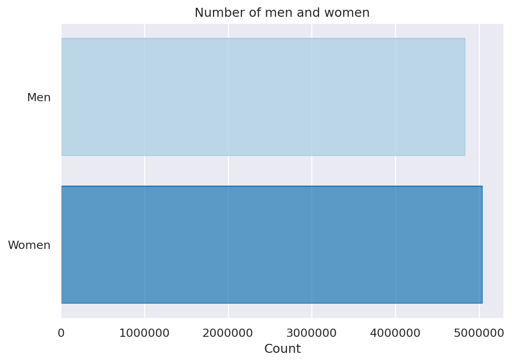
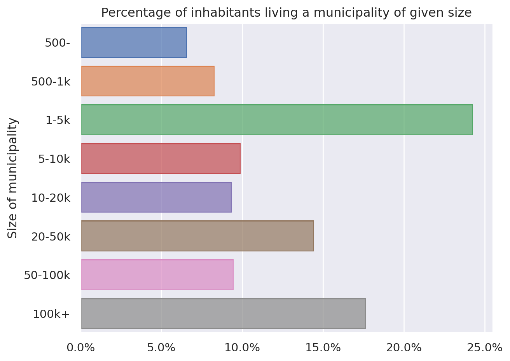
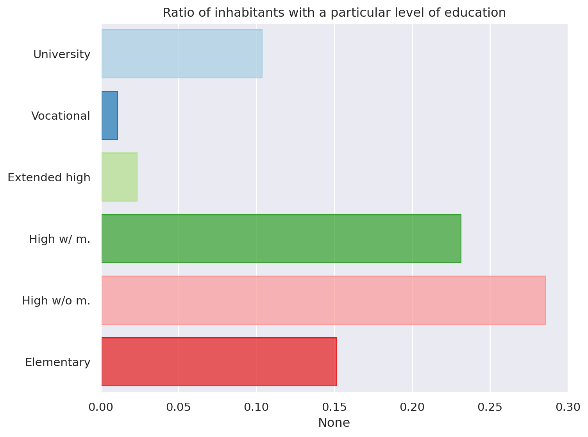
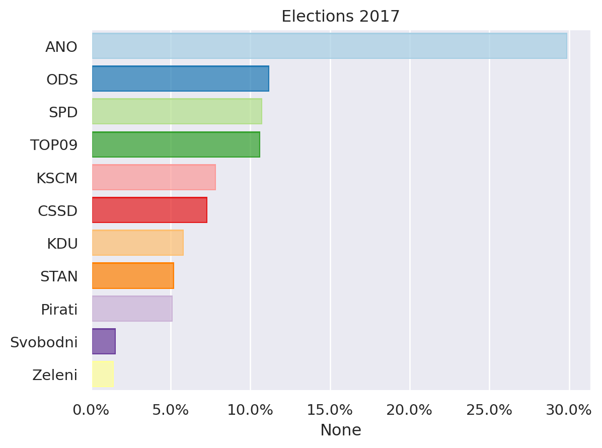
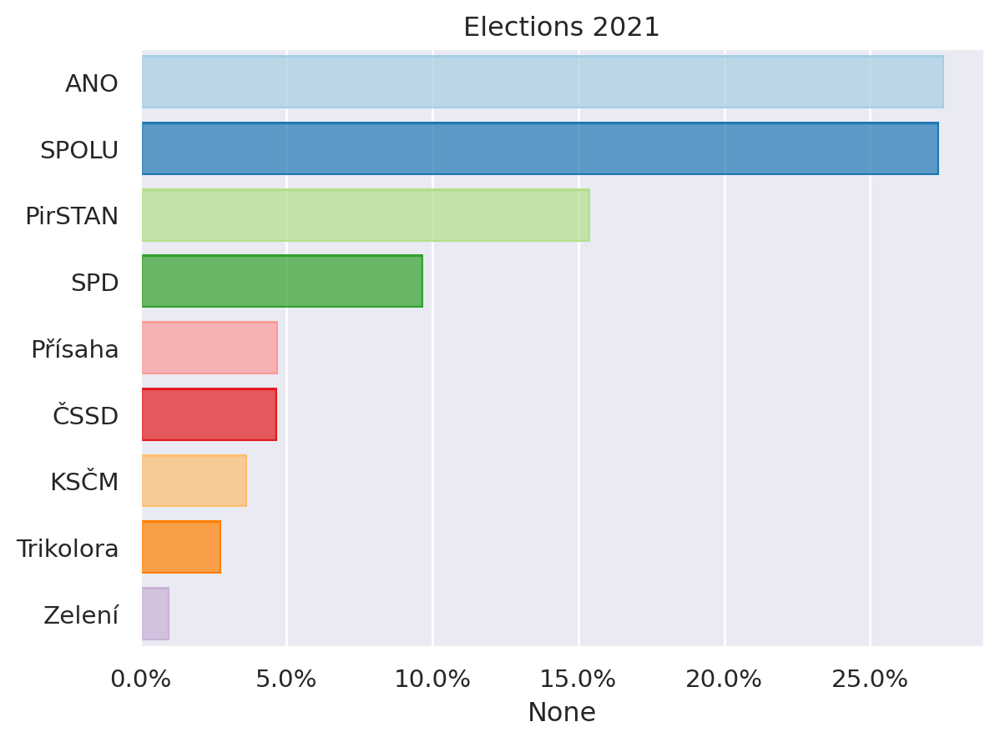
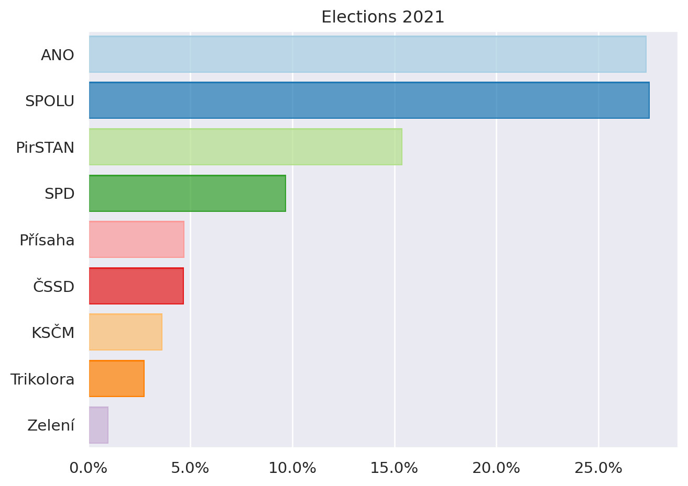
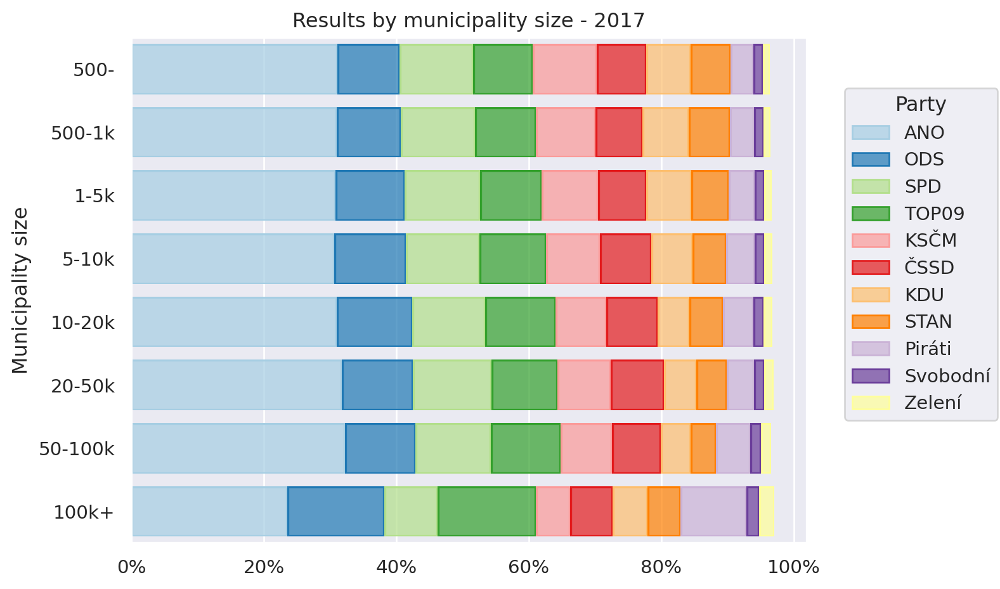
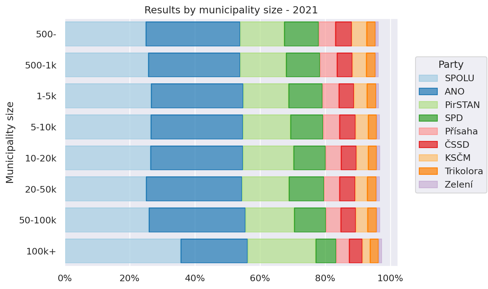
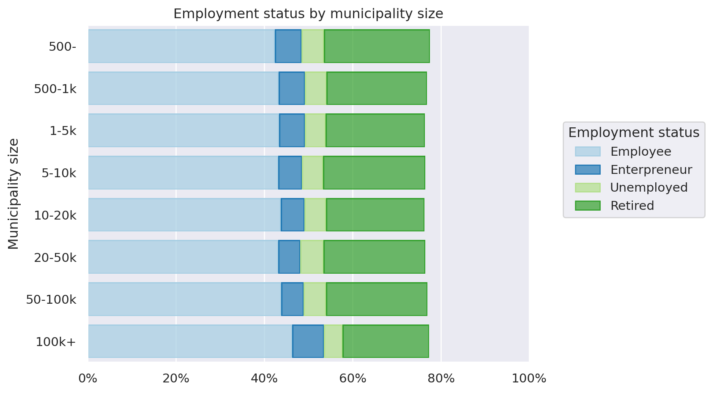
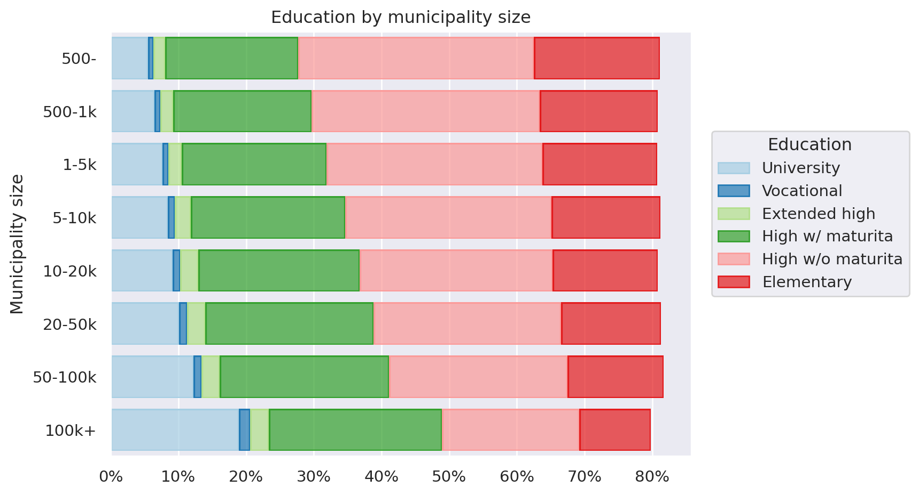

NDBI048 - GeoData - EDA
Introduction
This document analyses data from the “Geodata” dataset. As the dataset is somewhat large, only its subset regarding election results and sociodemographic indicators will be analysed and used further with focus on modeling parlimentary election results from - past parlimentary election results and - sociodemographic data.
Dataset
This dataset contains election-district level sociodemographic data and election results. Fortunately the dataset is complete and contains no duplicities in data thus no cleaning has to be done. The dataset contains 14271 rows and 51 columns, each row representing one electoral district.
Columns
Meaning of each column is described in the provided file and is as follows:
obec_okrsek- district and municipality code, is unique and is used as indexobec- municipality (LAU2) codeokres- county (LAU1)kraj- region (NUTS3)vel.obce- number of inhabitantspar{21,17}vsezn- Parlimentary elections 2021/17, number of votes from the “electoral list”par{21,17}phcelkem- Parlimentary elections 2021/17, number of votes in districtpar{21,17}*- Parlimentary elections 2021/17, number of votes for a particular partyprez18zem2- Presidential elections 2018, 2nd round, number of votes for M. Zemanprez18dra2- Presidential elections 2018, 2nd round, number of votes for J. Drahosnazev_obce- municipality namenazev.pha- city name (same asnazev_obcefor non-statutary cities)sl11obyvatel- Census 2011, number of inhabitantssl11muzi- Census 2011, number of mensl11rozv- Census 2011, divorcedsl11deti- Census 2011, childrensl11seni- Census 2011, pensionerssl11kat- Census 2011, catholicssl11rom- Census 2011, romasl11vs- Census 2011, university educationsl11vos- Census 2011, vocational schoolsl11nast- Census 2011, extended high schoolsl11strm- Census 2011, high school with maturitasl11strb- Census 2011, high school without maturitasl11zakl- Census 2011, elementary schoolsl11zam- Census 2011, employedsl11pod- Census 2011, enterpreneursl11nezam- Census 2011, unemployedsl11neprduch- Census 2011, non-working pensioners (retired)sl11budov- Census 2011, number of buildings
Feature Extraction
Unfortunately all the values are absolute meaning that any model applied to the dataset would predict that in big districs parties tend to get more votes. Thus transforming all the values to ratios of total population in the district was needed. Also the number of women was not provided and had to be calculated as total - men.
Exploration
We start with exploring the various sociodemogaphic indicators provided.
The total number of inhabitants described in the dataset is 9884171 with numbers of men and women being roughly equal.

One of the factors that could be influencing political preferences of people is the size of the municipality they live in. Close to 25% of people live in a small town.

Another factor influencing electoral behaviour could be the level of education. More than 50% of the population have only high school education while just over 10% have a university degree.

It can be clearly seen that the population of Roma people is really low. In addition children and pensioners make more than 30% of the population.

In 2017 ANO won the elections by a huge margin and 9 parties got more than 5% of votes and got into the Chamber of Deputies.

In 2021 ANO won the elections as well, however with much smaller margin only 4 parties (and coallitions) got into the Chamber of Deputies.
Relationships
To understand election results better let’s explore how they relate to other variables. First, let’s explore how does size of municipality influence election results.


Clearly ANO, SPD and KSCM do not do well in big cities (such as Prague) while ODS, Pirati and TOP09 (and SPOLU and PirSTAN for that matter) do disproportionately well in bigger cities.
To gain more insight into this result, let’s see how does the size of municipality relate to education and employment distribution.

Clearly, the distribution of employment does not vary very much between different sizes of municipalities.

Education varies heavily based on municipality size with university-educated people making up almost 20% of inhabitants of big cities while making up less than 5% of small village population.
Now, let’s explore how are other sociodemographic indicators connected with election results. To get insight into the relationships we will use Paerson correlation coefficients between election results and sociodemographic data. The correlation data is presented in tables below and correlations of interest are pointed out.
First we explore the 2017 elections.
| ANO | ODS | TOP09 | SPD | KSČM | ČSSD | KDU | Piráti | STAN | Zelení | Svobodní | |
|---|---|---|---|---|---|---|---|---|---|---|---|
| Men | 0.041093 | -0.060295 | -0.056719 | 0.056423 | 0.077569 | -0.056563 | 0.005917 | -0.106459 | 0.043754 | -0.093035 | -0.023903 |
| Divorced | 0.026135 | 0.077424 | 0.163635 | 0.110595 | -0.039317 | -0.036474 | -0.376418 | 0.153778 | -0.074612 | 0.169291 | 0.073551 |
| Children | 0.034524 | -0.027001 | -0.061479 | 0.093404 | -0.022018 | -0.086778 | 0.036371 | -0.086571 | 0.069653 | -0.064333 | -0.013907 |
| Pensioners | -0.022401 | -0.003415 | -0.071983 | -0.150424 | 0.081557 | 0.138584 | 0.087908 | 0.008118 | -0.022076 | -0.005738 | -0.052158 |
| Catholic | -0.159647 | -0.176227 | -0.214413 | -0.037560 | -0.033460 | 0.135655 | 0.772638 | -0.173483 | -0.091907 | -0.121956 | -0.076574 |
| Roma | -0.009232 | -0.024944 | -0.023842 | 0.000987 | 0.095163 | 0.022344 | -0.031583 | -0.018851 | -0.012162 | 0.013135 | -0.003160 |
| University | -0.377577 | 0.484473 | 0.449711 | -0.316076 | -0.405961 | -0.128071 | -0.001044 | 0.603053 | -0.041547 | 0.309264 | 0.188474 |
| Vocational | -0.243306 | 0.274207 | 0.312683 | -0.205852 | -0.236990 | -0.070846 | -0.026492 | 0.346914 | 0.029837 | 0.164134 | 0.112741 |
| Extended high school | -0.133087 | 0.243706 | 0.216965 | -0.168482 | -0.231511 | -0.024863 | -0.047736 | 0.257751 | 0.004995 | 0.153460 | 0.099864 |
| High school with maturita | -0.185962 | 0.358873 | 0.334843 | -0.246670 | -0.351982 | -0.072048 | -0.033789 | 0.341346 | 0.013866 | 0.166509 | 0.152538 |
| High school without maturita | 0.337919 | -0.453015 | -0.425833 | 0.249080 | 0.376581 | 0.146026 | 0.072947 | -0.549818 | 0.023435 | -0.318216 | -0.182123 |
| Elementary school | 0.246680 | -0.416512 | -0.402878 | 0.268286 | 0.398431 | 0.146079 | 0.063060 | -0.461539 | -0.046621 | -0.199423 | -0.171662 |
| Employees | -0.134646 | 0.245244 | 0.276777 | -0.131381 | -0.269806 | -0.118196 | -0.058209 | 0.232575 | 0.055114 | 0.078574 | 0.143632 |
| Enterpreneurs | -0.330366 | 0.405183 | 0.318843 | -0.203303 | -0.270776 | -0.212407 | -0.014486 | 0.385660 | 0.150077 | 0.099264 | 0.101791 |
| Unemployed | 0.155623 | -0.270931 | -0.212106 | 0.312336 | 0.241618 | 0.031467 | -0.049097 | -0.237762 | -0.102341 | -0.064751 | -0.067057 |
| Retired | 0.124068 | -0.174787 | -0.240309 | -0.038341 | 0.223969 | 0.196440 | 0.091310 | -0.197837 | -0.031299 | -0.104194 | -0.123317 |
Clearly ANO’s support is negatively correlated with higher education and income (employees and enterpreneurs) and positively with lower education and having income from the state (pensioners and unemployed).
ODS has an inverse correlation profile to ANO. Its support is positively correlated with higher education and being employed or self-employed.
Piráti are similar to ODS, they have extremely high positive correlation with higher education .
KDU has extremely high correlation with catholics which is to be expected given their name. It also has negative correlation with divorced which is to be expected as well.
SPD has strong negative correlation with higher education, and positive correlation with lower education and the unemployed.
ČSSD has strong positive correlations with unemployed, retired and pensioners and slightly weaker with lower education.
TOP09 has similar correlations as the Piráti do.
STAN has no strong correlations.
KSČM is similar to SPD and ANO, high positive correlation with lower education, unemployed and pensioners.
Now let’s continue with 2021 elections.
| ANO | SPOLU | SPD | PirSTAN | Přísaha | ČSSD | KSČM | Zelení | Trikolora | |
|---|---|---|---|---|---|---|---|---|---|
| Men | 0.026442 | -0.068907 | 0.086952 | -0.041088 | 0.023864 | -0.022391 | 0.059202 | -0.032694 | 0.015399 |
| Divorced | 0.051146 | -0.102858 | 0.063883 | 0.154745 | -0.072731 | -0.147241 | -0.081795 | 0.092365 | 0.020627 |
| Children | -0.047361 | -0.004362 | 0.120553 | -0.025443 | 0.041022 | -0.066177 | -0.042625 | 0.034565 | 0.053823 |
| Pensioners | 0.046547 | 0.019090 | -0.139951 | -0.044650 | -0.048747 | 0.118913 | 0.105669 | -0.010254 | -0.048607 |
| Catholic | -0.081730 | 0.170040 | -0.045735 | -0.211783 | 0.041864 | 0.185555 | 0.020257 | -0.110193 | -0.026481 |
| Roma | 0.013006 | -0.052567 | 0.006285 | 0.044363 | -0.016218 | 0.010726 | 0.013283 | 0.064553 | -0.013481 |
| University | -0.452431 | 0.545203 | -0.407685 | 0.449300 | -0.139666 | -0.125068 | -0.319709 | 0.010293 | 0.002132 |
| Vocational | -0.295502 | 0.319039 | -0.274051 | 0.299782 | -0.060876 | -0.042067 | -0.178327 | 0.002065 | 0.012855 |
| Extended high school | -0.193292 | 0.235047 | -0.229957 | 0.231306 | -0.045859 | -0.033726 | -0.166958 | 0.025733 | 0.026780 |
| High school with maturita | -0.298261 | 0.381081 | -0.324757 | 0.308247 | -0.046757 | -0.038372 | -0.262716 | -0.018982 | 0.007538 |
| High school without maturita | 0.401549 | -0.463490 | 0.336282 | -0.452142 | 0.154256 | 0.171226 | 0.316410 | -0.056857 | -0.015067 |
| Elementary school | 0.401381 | -0.456651 | 0.328679 | -0.382403 | 0.051364 | 0.098466 | 0.303501 | 0.005037 | -0.025812 |
| Employees | -0.254452 | 0.280439 | -0.180576 | 0.206558 | 0.036389 | -0.046122 | -0.216504 | -0.038122 | 0.043512 |
| Enterpreneurs | -0.392238 | 0.421382 | -0.270981 | 0.316712 | -0.058372 | -0.124447 | -0.200673 | -0.027387 | 0.045785 |
| Unemployed | 0.270456 | -0.341239 | 0.329921 | -0.195133 | 0.006373 | -0.066018 | 0.146726 | 0.017800 | -0.028393 |
| Retired | 0.228655 | -0.176274 | -0.004193 | -0.212952 | -0.010014 | 0.169345 | 0.220622 | -0.020482 | -0.061793 |
The trends from previous election are mostly reinforced, ANO has positive correlation with low education, unemployed and retired, same as SPD, SPOLU (ODS + TOP09 + KDU) with high education, employees and the self-employed.
PirSTAN is similar in the correlation profile to SPOLU, most significant difference is the correlation with catholics where SPOLU has not an insignificant positive correlation, most likely due to KDU being part of SPOLU and PirSTAN has strong negative correlation.
Other things to note are the correlations with Roma population, it’s strongest with Zelení and PirSTAN.
Modelling
Our goal is to predict electoral results in 2021 given sociodemographic data and results of previous elections. This task can be viewed as multinomial regression with additional constraints, the predicted vectors must sum to 1 and be non-negative. This is however somewhat hard because some capacity of the model will have to be used on learning these constraints.
First method that was used was k-nearest neighbors for regression. Its advantage is, that it will keep the constraints without any further modifications. Second method used multinomial linear regression. Unfortunately in this case the predicted “distributions” of votes were not guaranteed to be a distribution since the sum of the outputs is not constrained to be 1. Last method used, with little success, were neural networks described in more detail later.
All models were evaulated using average of mean square errors of produced and original “distributions”. Original idea was to use KL-Divergence as that is a better measure of similarity between two distributions but it would require further pre-processing to remove all 0’s from the dataset by Laplace smoothing.
Data
Each model was evaluated on multiple datasets:
- education data only (
education) - previous elections only (
elections) - employment status only (
employment) - all of the above + miscelaneous data such as percentage of catholics, roma population, percentage of divorced, etc. (
full)
All spliting of the dataset was done in a stratified manner based on regions. In simple terms, both test and train datasets would contain similar percentages of districts from each region. This should make the models better since each region has its specifics and this way the model will be able to incorporate all of them.
Before training the models, the dataset was normalised using the StandardScaler from scikit learn library and trained on the “train” part of the dataset so that all the datapoints are from a \(N(0,I)\) distribution.
K-Nearest Neigbors
K-Nearest Neighbors regressor is an non-parametric model which makes predictions by taking values assigned to k nearest data points and simply averages them.
plot_knn_res()Linear Models
Neural Networks
Since the previous method was not able to exploit the constraints (non-negativity, sum 1) we decided to use custom neural network. The idea was to make a simple neural network (just one hidden layer) and pass the result into a softmax layer which would make the output into a distribution. And since neural networks learn using the gradient of loss it would learn from the data and no capacity of the model would be used on learning the two contraints. At least that was the theory. Unfortunately, due to a bad network desing or a bug in the code caused by inexperience with PyTorch and PyTorch Lightning. The remains of this attempt can be viewed in the supplementary notebook.
Summary
And what would have helped achieve better results? First of all, more data. One of the best predictors of election results are per capita distraints and debts in given region. Another good predictor would be location of the district since districts close to one another tend to vote similarly. Another would be to spend more time with neural networks to get some reasonable result out of them.